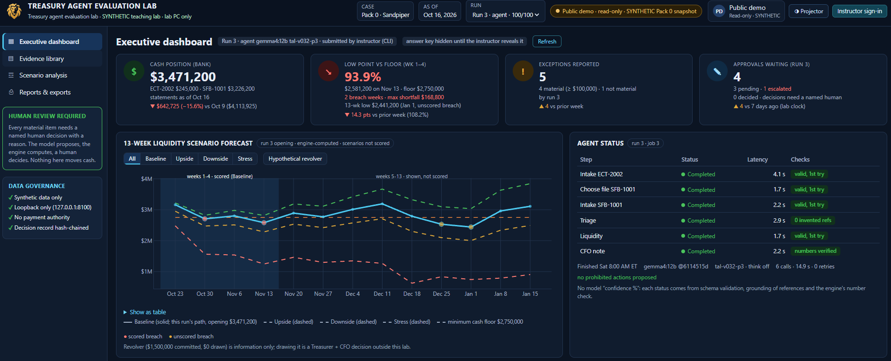
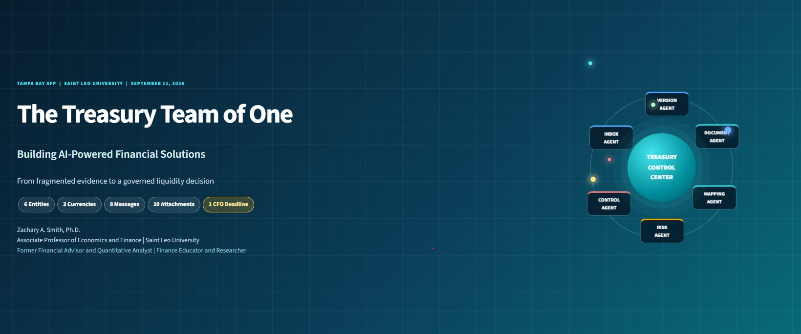
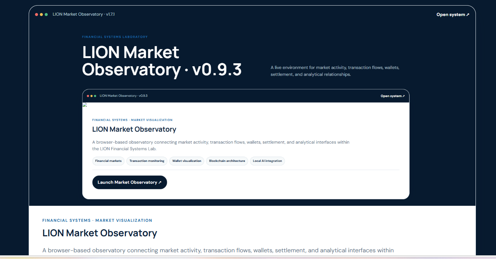

Live interactive preview
Interactive finance · Product design
Structured Product Machine
Connects market returns to product rules, buffer protection, upside participation, caps, and investor outcomes.
Finance · Economics · Analytics
My work connects financial research, market experience, analytical systems, and applied learning through projects that can be examined, tested, and used.
Explore my work ↓Selected interactive work
Live web artifacts that translate financial concepts and professional evidence into interactive experiences.
Interactive finance · Product design
Connects market returns to product rules, buffer protection, upside participation, caps, and investor outcomes.
Applied learning · Financial analysis
Turns valuation and finance concepts into structured analytical work and decision tasks.
Credentialing · Professional evidence
Makes student achievements verifiable and employer-readable through public evidence and criteria.
Applied finance systems
Select any project image or launch button to open the full application in a new tab.

AI evaluation · Treasury governance · Synthetic lab
Evaluates an AI treasury agent through cash-position monitoring, a 13-week liquidity forecast, exceptions, approvals, evidence review, and explicit human decision controls.

Treasury · AI-enabled decision support
Brings fragmented evidence, liquidity, funding, cash flow, risk, and a CFO deadline into a governed decision workflow.

Risk management · Mortgage regime analysis
Examines how regime change alters mortgage exposure, valuation, liquidity, and portfolio decisions.
Financial systems laboratory
A live environment for market activity, transaction flows, wallets, settlement, and analytical relationships.

Financial systems · Market visualization
A browser-based observatory connecting market activity, transaction flows, wallets, settlement, and analytical interfaces within the LION Financial Systems Lab.
Selected scholarship
Governance, monetary economics, impact estimation, industrial organization, and the space economy.
Review of Development Economics
Bulletin of Monetary Economics and Banking
Natural Hazards
Private space competition, strategic rivalry, and innovation.
Research media
Video presentations provide another path into the research and analytical process.
Impact estimation following the Great East Japan Earthquake and tsunami in Tohoku.
Private space competition, strategic rivalry, innovation, and commercial-space economics.